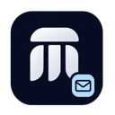

UnifiedSignatures
Company email signaturesOne company.
Every signature.
Automatic Outlook signatures for Matertec employees.
Your Microsoft work details, in the company template.
01 · Your work account
Your work signature
Open this app inside Outlook to see your work account.
In Outlook, open a received email, choose Apps, then UnifiedSignatures. Your administrator must assign the app to you first.
02 · A quick look
Your signature preview
Your name, title, work email and business phone come from Microsoft 365. Missing optional details are left out.
Your own signature will appear here after you connect your work details.
Ready for a quick test?
Start a new email, or reply to an existing one. Check the signature before sending.
What happens when I connect?
Microsoft supplies your own work-profile details so this app can build your signature. This setup screen does not send an email or upload your message content. If your title or phone is missing, ask your administrator to update your Microsoft work profile.
What about Admin, Accounts and Info?
In Outlook web, choosing an approved shared From address selects its role signature. Check with your administrator before using shared addresses on your phone. Your administrator enables the app for each employee.